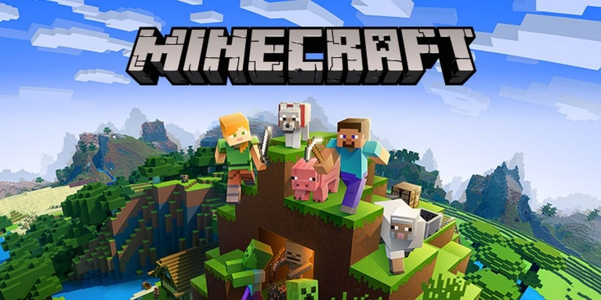
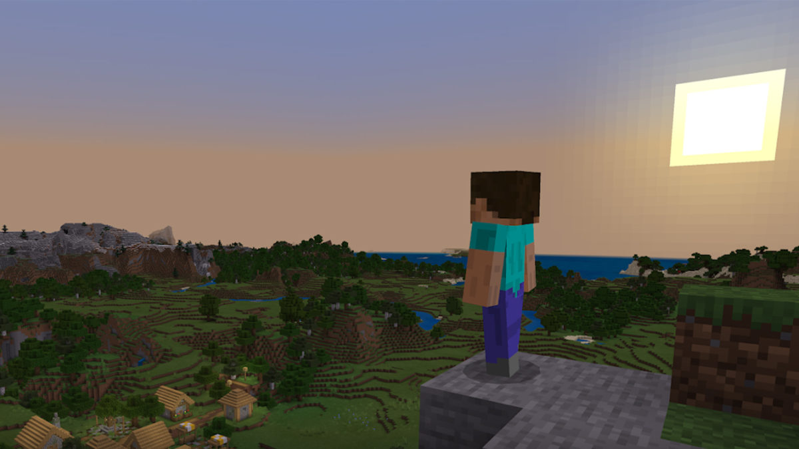
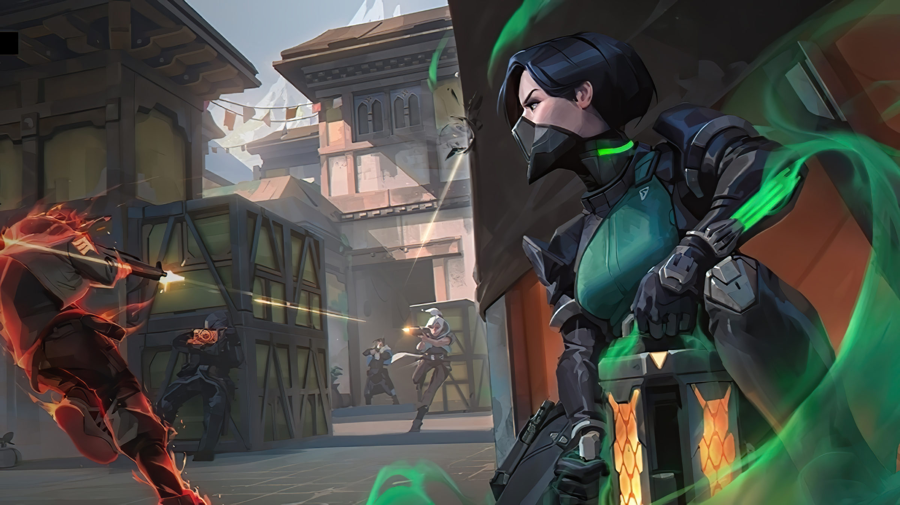
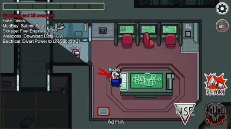
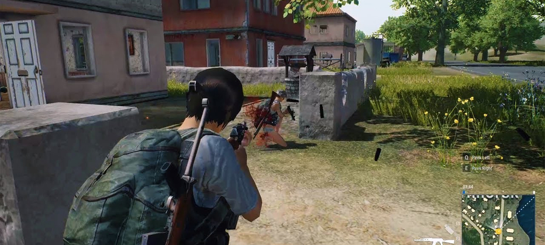

Minecraft is a sandbox video game developed by Mojang . The game was created by Markus "Notch" Persson in the Java programming language. Following several early test versions, it was released as a paid public alpha for personal computers in 2009 before releasing in November 2011, with Jens Bergensten taking over development. Minecraft has since been ported to several other platforms and is the best-selling video game of all time, with 200 million copies sold and 126 million monthly active users as of 2020.[wiki]
Dwonload



Valorant (stylized as VALORANT) is a free-to-play multiplayer tactical first-person hero shooter developed and published by Riot Games, for Microsoft Windows. First teased under the codename Project A in October 2019, the game began a closed beta period with limited access on April 7, 2020, followed by official release on June 2, 2020. Development of the game started in 2014.
Dwonload


Among Us[c] is an online multiplayer social deduction game developed and published by American game studio Innersloth. It was released on iOS and Android devices in June 2018 and on Windows in November 2018, featuring cross-platform play between these platforms.[15] The game was also released on the Nintendo Switch in December 2020, and has planned releases for the Xbox One and Xbox Series X and Series S in 2021.
Dwonload



PlayerUnknown's Battlegrounds (PUBG) is an online multiplayer battle royale game developed and published by PUBG Corporation, a subsidiary of South Korean video game company Bluehole. The game is based on previous mods that were created by Brendan "PlayerUnknown" Greene for other games, inspired by the 2000 Japanese film Battle Royale, and expanded into a standalone game under Greene's creative direction.
Dwonload